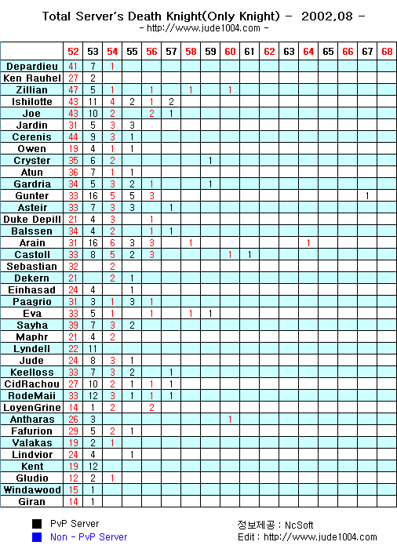
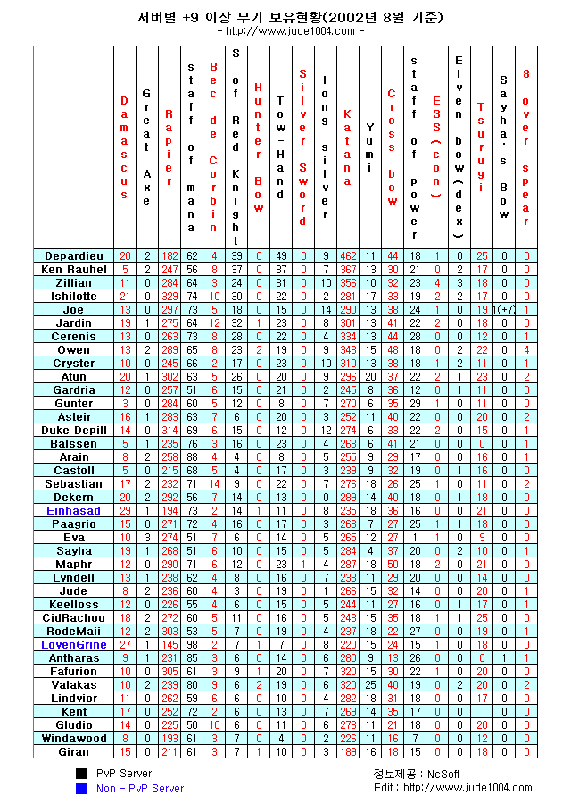

2002年9月18日
來源：Jude1004.com
NCsoft最近公佈了韓國正式伺服器的Lv52+玩家人數統計，有關資料大約截止9月初，因此最近升上Lv65的騎士"光"在統計中仍是Lv64，而最高等級的玩家應該是Lv67的"Poseidon"，另外等級60或以上的玩家共有6名。
鳴謝Jude1004.com提供以下英語圖片！

韓國正式伺服器+9或以上武器統計

Copyright(C)1998-2003 Gabriel Leung. All Rights Reserved.